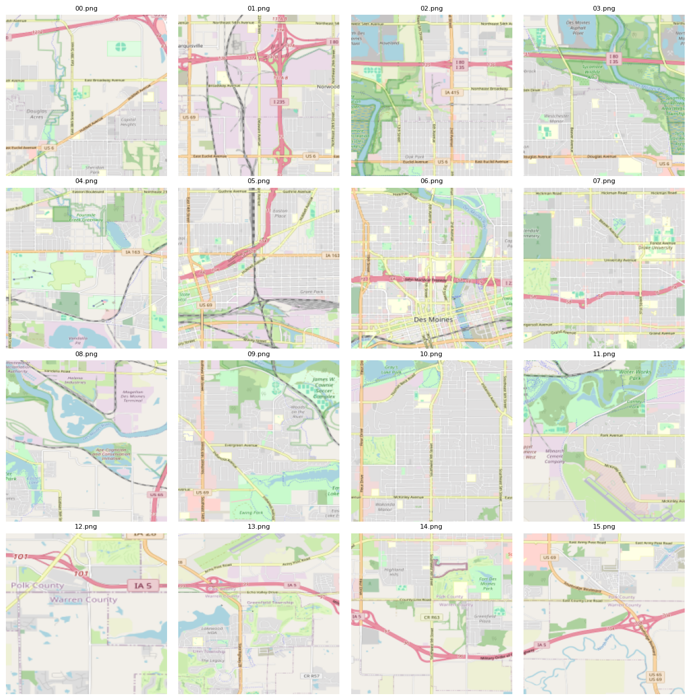

Multimodal Neural Networks for Risk Classification
Implementing multi-modal neural networks with pytorch
Machine Learning
Python
Published
December 14, 2024
Multimodal neural networks are a type of model designed to integrate data from multiple modalities, such as text, images, audio, video, or other data types. Multimodal networks aim to learn complex relationships between different kinds of inputs, with the hope of achieving better performance than a model focusing on a single modality.
For example, in applications like video captioning, a multimodal network combines visual features from video frames with linguistic models to generate descriptive text. In tasks like audio-visual speech recognition, it can integrate auditory and visual data for more robust performance. By leveraging diverse types of data, multimodal neural networks improve the accuracy and context-awareness of machine learning systems, allowing for potentially deeper insights.
This post documents how to create a multimodal network for the purpose of quantifying roadway risk using traditional tabular features along with images of the surrounding region. The tabular features may describe the underlying network topology, or the number of traffic citations issued as a function of daily traffic volume, etc. Here a synthetic dataset will be used, but would be replaced with meaningful variables for real-world usage.
For the purposes of demonstration, a small set of images are used: The Des Moines, Iowa metro region is partitioned into 16 equally sized tiles laid out in a 4x4 grid pattern:
# Create a grid of sample images.import osfrom pathlib import Pathimport cv2import matplotlib.pyplot as pltfrom mpl_toolkits.axes_grid1 import ImageGridimage_dir = Path("images")image_paths = [image_dir.joinpath(f"{str(ii).zfill(2)}.png") for ii inrange(16)]fig = plt.figure(figsize=(12., 12.), tight_layout=False)grid = ImageGrid(fig, 111, nrows_ncols=(4, 4), axes_pad=0.20)# Load images.images = [cv2.cvtColor(cv2.imread(ii), cv2.COLOR_BGR2RGB) for ii in image_paths]# Resize to 196 x 196.images = [cv2.resize(ii, (196, 196), interpolation=cv2.INTER_AREA) for ii in images]for ax, path, img inzip(grid, image_paths, images): ax.imshow(img) ax.axis("off") ax.set_title(path.name, fontsize=8)plt.show()
c:\Users\jtriv\miniforge3\envs\torch\Lib\site-packages\IPython\core\pylabtools.py:170: UserWarning: This figure includes Axes that are not compatible with tight_layout, so results might be incorrect.
fig.canvas.print_figure(bytes_io, **kw)

In practice, a much larger dataset with tens or hundreds of thousands of images would be used, but this small sample will suffice to demonstrate the approach. The setup used here can be specialized for different but similar task.
A synthetic dataset is created to represent tabular features and label along with the path to the corresponding image file. Each row corresponds to one of the images shown in the grid above. For the label, 1 represents a region of high risk and 0 a region of low risk based on an auxiliary analysis:
import numpy as npimport pandas as pdimport torchnp.set_printoptions(suppress=True, precision=5)pd.options.mode.chained_assignment =Nonepd.set_option('display.max_columns', None)pd.set_option('display.width', None)pd.set_option("display.precision", 5)torch.manual_seed(516)rng = np.random.default_rng(516)# Create 20 random tabular features. df has the same number of rows as the# number of images (16).df = pd.DataFrame(rng.normal(size=(16, 20)))# Add label.df["label"] = rng.integers(0, high=2, size=16)# Add path to corresponding image file.df["image_path"] = [image_dir.joinpath(f"{str(ii).zfill(2)}.png") for ii inrange(16)]df.head(7)
0
1
2
3
4
5
6
7
8
9
10
11
12
13
14
15
16
17
18
19
label
image_path
0
1.28963
0.48410
0.24857
0.73372
-0.98589
-0.32993
0.14570
-1.27563
0.33370
-1.23056
-0.54767
-0.42706
1.92863
0.82478
0.78189
-0.68096
1.84075
-0.58315
1.39984
1.98030
0
c:\Users\jtriv\repos\blog-posts-in-progress\mu...
1
-1.20795
0.30504
-0.62360
0.59993
0.12950
2.13616
0.24374
-0.68748
-2.42601
-0.10827
-3.08048
0.81488
1.87151
-1.50928
-0.93552
0.40171
-0.42437
-0.82750
-0.49901
0.69287
1
c:\Users\jtriv\repos\blog-posts-in-progress\mu...
2
0.29436
0.91876
-0.76522
0.34283
2.13044
-2.04926
1.72924
-0.08234
0.66696
-0.96648
-0.54479
-0.93761
0.46527
-0.81374
-0.45954
-0.46045
0.83743
0.33436
-0.10157
-1.33409
1
c:\Users\jtriv\repos\blog-posts-in-progress\mu...
3
-0.29149
0.40605
2.30611
-0.19939
1.56295
1.48744
0.99899
-0.05705
0.53843
1.20204
-1.36381
-0.78851
0.04786
-0.87854
-1.01904
-0.52666
-0.96457
-0.04617
1.71839
1.36298
0
c:\Users\jtriv\repos\blog-posts-in-progress\mu...
4
-1.04513
-2.56570
-0.52784
1.27892
-0.47038
-0.24379
-1.13843
-0.48612
1.41375
1.29564
-0.49210
-0.86928
2.09184
0.90340
0.38600
-0.63851
-1.43843
-0.79458
0.89424
-0.73609
0
c:\Users\jtriv\repos\blog-posts-in-progress\mu...
5
1.46810
-2.06851
-1.91358
-1.55112
-0.76136
0.25340
1.18610
-0.80685
-1.51704
-1.29806
-0.75313
-0.02666
1.32913
0.30397
-1.81921
-0.98140
-0.45354
-1.29872
0.13481
0.87467
0
c:\Users\jtriv\repos\blog-posts-in-progress\mu...
6
-0.43073
-0.81238
1.35071
-0.62312
-0.74979
0.53097
-0.13714
0.01988
-0.65419
-0.41824
-1.15486
0.37681
0.62695
0.75203
-0.88323
-0.44607
-1.04912
-0.49071
-0.28945
-0.66037
0
c:\Users\jtriv\repos\blog-posts-in-progress\mu...
In order to supply the model with training data, a custom Dataset object is created. It accepts the DataFrame created in the previous cell along with the desired image dimension. The __getitem__ method is overridden to return a dictionary consisting of the image, tabular features and label for a single training sample:
In total, three separate models need to be created:
A convolutional neural network (CNN) to be trained on image data
A fully-connected network to be trained on tabular features
A combined network which concatenates activations from 1 and 2 and generates a prediction
A simple CNN is shown below, but any model can be used in its place. PyTorch’s pre-trained weights and associated models are worth exploring, available here.
# Simple CNN for image data. import torch.nn as nnimport torch.nn.functional as Fclass BasicCNN(nn.Module):def__init__(self, dropout=0):super().__init__()self.conv1 = nn.Conv2d(in_channels=3, out_channels=6, kernel_size=5)self.pool = nn.MaxPool2d(kernel_size=2, stride=2)self.conv2 = nn.Conv2d(in_channels=6, out_channels=4, kernel_size=5)self.fc1 = nn.Linear(in_features=529*4*4, out_features=120)self.fc2 = nn.Linear(in_features=120, out_features=64)self.drp = nn.Dropout(p=dropout)def forward(self, X): output =self.pool(F.relu(self.conv1(X))) output =self.pool(F.relu(self.conv2(output))) output = torch.flatten(output, 1) output = F.relu(self.drp(self.fc1(output))) output = F.relu(self.drp(self.fc2(output)))return output# Print number of trainable parameters.nbr_params =sum(p.numel() for p in BasicCNN().parameters())print(f"BasicCNN number of parameters: {nbr_params:,.0f}")
BasicCNN number of parameters: 1,024,604
Within self.fc1, in_features is set to 529 * 4 * 4 = 8,464, which is the flattened shape coming out of self.conv2 after the application of max pooling.
To use a pre-trained model, a different architecture is required. For example, to use ResNet34 trained on ImageNet data, a PretrainedCNN model is created:
# Pretrained CNN (ResNet34) for image data. import torch.nn as nnfrom torchvision import modelsclass PretrainedCNN(nn.Module):def__init__(self, dropout=0):super().__init__()self.model = models.resnet34()# Set requires_grad to False for pretrained model. for param inself.model.parameters(): param.requires_grad =False# Get dimension of last layer input. pt_num_features =self.model.fc.in_featuresself.model.fc = nn.Sequential( nn.Linear(in_features=pt_num_features, out_features=64), nn.Dropout(p=dropout), nn.ReLU(), )def forward(self, input): output =self.model(input)return output# Print number of trainable parameters.nbr_params =sum(p.numel() for p in PretrainedCNN().parameters())print(f"PretrainedCNN number of parameters: {nbr_params:,.0f}")
PretrainedCNN number of parameters: 21,317,504
PretrainedCNN has many more parameters than BasicCNN, but only weights associated with self.model.fc will be updated during backpropagation. All other weights have been frozen in the call to param.requires_grad = False. The actual number of trainable parameters for PretrainedCNN is closer to 30,000.
Within the forward pass, both BasicCNN and PretrainedCNN return an activation tensor having dimension BATCH_SIZE x 64.
The model to process tabular features is a simple fully-connected network with two hidden layers:
# Model to process tabular features.class TabularNN(nn.Module):def__init__(self, num_features, dropout=0):super().__init__()self.model = nn.Sequential( nn.Linear(in_features=num_features, out_features=64), nn.ReLU(), nn.Dropout(p=dropout), nn.Linear(in_features=64, out_features=128), nn.ReLU(), nn.Dropout(p=dropout), nn.Linear(in_features=128, out_features=32) )def forward(self, input): output =self.model(input)return outputnbr_params =sum(p.numel() for p in TabularNN(20).parameters())print(f"TabularNN number of parameters: {nbr_params:,.0f}")
TabularNN number of parameters: 13,792
num_features is the number of predictors in the tabular dataset (we used 20 for the synthetic data created earlier). Within the forward pass, TabularNN returns an activation tensor of dimension BATCH_SIZE x 32.
In the next cell, MultiModalNN accepts an image model and a tabular model, along with the dimension of the activation output for each. The activations are concatenated row-wise, then passed through the sigmoid to generate an output between 0 and 1, where values closer to 1 represent higher risk regions. MultiModalNN consists only of a single linear layer which reduces the dimensionality of the concatenated activations down to an output dimension BATCH_SIZE x 1. The forward method accepts both a batch of images and a batch of tabular features.
To create a MutliModalNN instance, we first initialize the component models. Recall that for BasicCNN, the output will be BATCH_SIZE x 64 and for TabularNN BATCH_SIZE x 32. The optimizer is initialized, the loss function specified and code is added to train on multiple GPUs in parallel if available:
dropout =.10# Dropoutngpu =1# Number of GPUs # Create model instances.cnn_model = BasicCNN(dropout=dropout)tab_model = TabularNN(num_features=20, dropout=dropout)mm_model = MultiModalNN(cnn_model, tab_model, image_act_dim=64, tabular_act_dim=32, dropout=dropout)# Specify loss criteria and optimizer.criterion = nn.BCELoss()optim = torch.optim.Adam(mm_model.parameters(), lr=0.0002, betas=(.50, 0.999))# Distribute model across multiple gpus if available.if (device.type=="cuda") and (ngpu >1): model = nn.DataParallel(mm_model, list(range(ngpu)))
As a quick verification, a batch of training data is passed into mm_model to ensure the correct output dimensionality:
+ [train][epoch=1, batch=0] loss = 0.00696.
+ [train][epoch=2, batch=0] loss = 0.00690.
+ [train][epoch=3, batch=0] loss = 0.00676.
+ [train][epoch=4, batch=0] loss = 0.00658.
+ [train][epoch=5, batch=0] loss = 0.00668.
+ [train][epoch=6, batch=0] loss = 0.00648.
+ [train][epoch=7, batch=0] loss = 0.00812.
+ [train][epoch=8, batch=0] loss = 0.00723.
+ [train][epoch=9, batch=0] loss = 0.00835.
+ [train][epoch=10, batch=0] loss = 0.00585.
Enhancements
As presented above, the map images have a lot of detail that may not be of particular interest for the task at hand. It may be desirable to create binary images that represent roadways in white and everything else black. This can be accomplished using a segmentation model such as U-Net. The multimodal architecture can also be expanded to incorporate multiple images per training sample.